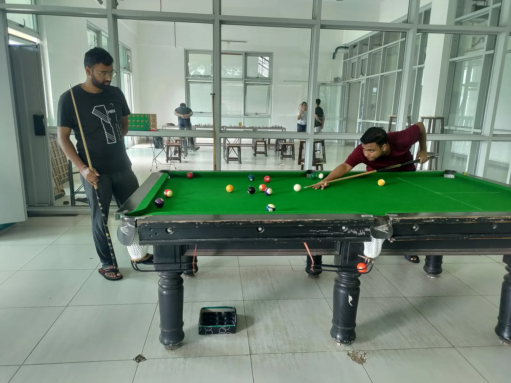
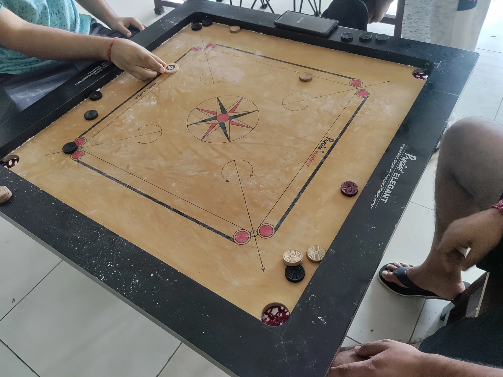
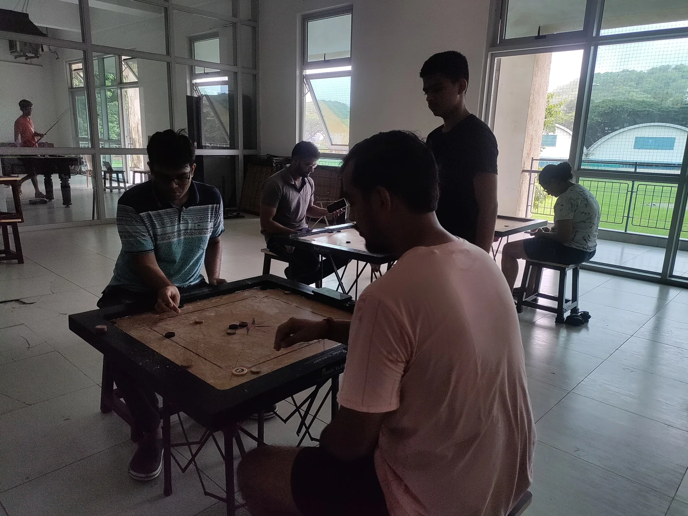

Pool & Snooker
- 1 pool table and 1 snooker table in the Board Games Room, New SAC 2nd Floor.
- Check current access and booking arrangements with the sports office.
Carrom, chess, pool, snooker, cubing and foosball bring different kinds of play into the same community. Find the room, explore its activities, and discover the related chess and Rubik’s clubs.
Find your starting pointSpaces, equipment and practice.
Get to know what the sport offers.

Facility descriptions are from the institute’s October 2026 archive. Confirm current access, hours, equipment and coaching arrangements with the sports office.
Board Games connects with the Dark Knight Chess Club and Rubik’s Club. Explore their existing pages for their own activities.
Dark Knight Chess Club ↗Rubik’s Club ↗Camps, institute competitions and ways to take part. Explore the activities described by the sports community.
These are archived activity descriptions, not upcoming fixtures. Ask the team about current dates, entry and eligibility.
A rapid-format open chess tournament open to all campus residents. The Institute Chess Open is one of the highest-participation fixtures on the board games calendar, drawing players across all rating ranges in a fast-paced, competitive format.
The flagship classical-format chess tournament of IIT Bombay, recognising the strongest chess player on campus. Run over multiple rounds with standard time controls, the Championship is the most prestigious individual title in institute chess.
A league-format chess tournament ensuring every registered player competes in multiple matches across the semester. The league structure rewards consistency and depth, making it one of the most competitive fixtures in the board games programme.
The inter-hostel chess general championship, where hostels field teams in a competitive bracket. Points contribute directly to the overall GC standings, making every match a high-stakes encounter for hostel pride.
A dedicated chess tournament for post-graduate students, running alongside the main GC season. PG Mania gives PG residents a focused competitive fixture and contributes to the PG General Championship standings.
The inter-hostel carrom general championship — one of the most hotly contested indoor sport fixtures on campus. Hostels field players in singles and doubles categories, with the competition drawing large crowds to the Board Games Room.
Historical results from the institute’s published source, preserved with their original years.
2024 Inter IIT - Gold (Led by Nitish Bhat)
2023 Inter IIT - 4th (Led by Nitish Bhat)
2022 Inter IIT - Gold (Led by Atharva Tayade)
2019 Inter IIT - Bronze (Led by Dhruv Jain)
Ask the sports office for the current entry point and access arrangements.
Contact the sports officeAsk about getting started, current training, access or the right route into a team.
Contacts below are from the institutional snapshot of 18 October 2026. Confirm the current office-holder before reaching out.
Contact the sports office
Board games, on campus.
Photographs from the archive.

Another way to play
Cricket ↗